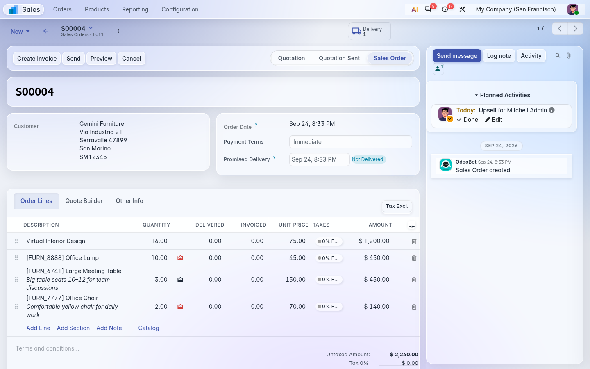
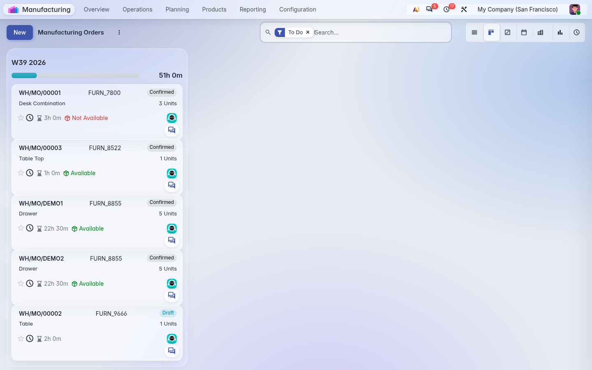
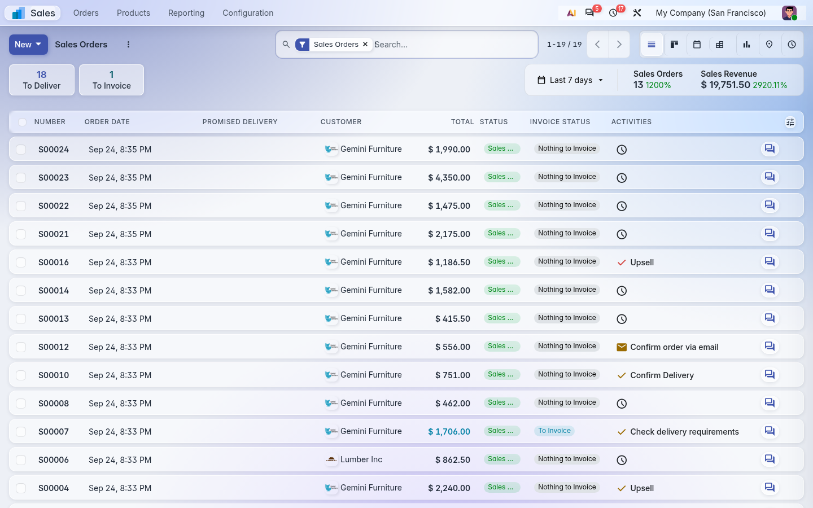
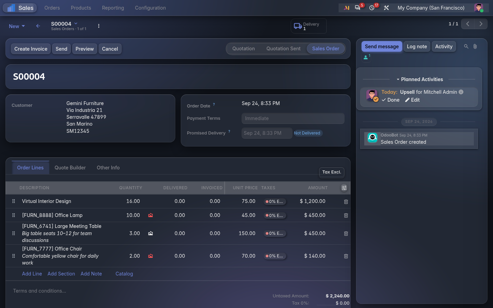
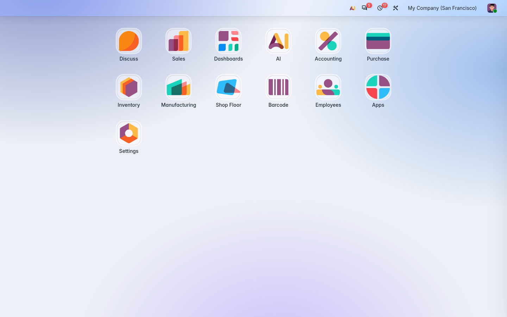
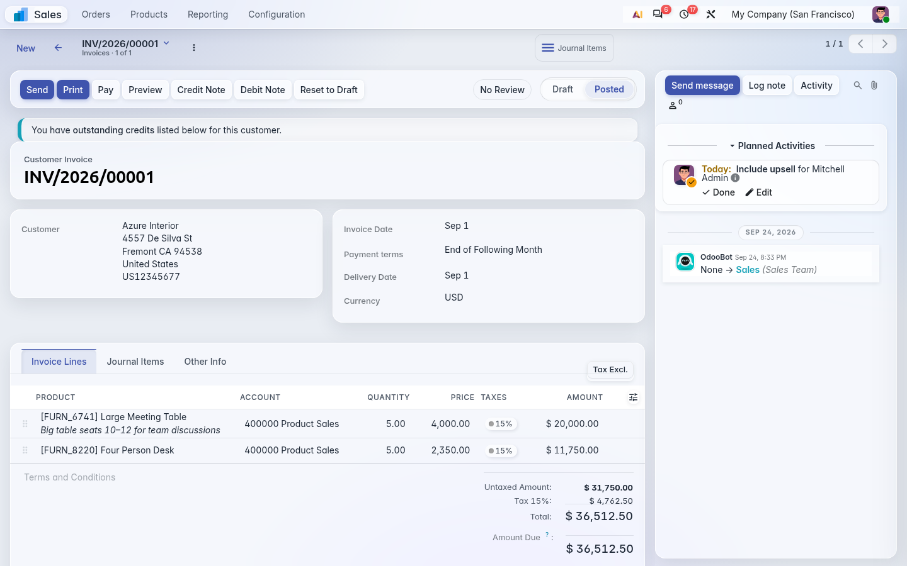

A pane is translucent white with a bright hairline edge, blurring the colour field behind it; nested panes get whiter; lanes are the faintest layer. Blur is applied only to containers — form panes, lanes, the navbar, overlays — never to rows or cards, so a long list or a busy pipeline stays smooth.


Rows are slim panes with the field showing between them; the header, group rows and totals are seated strips. Selection tints a row, editing rings it. Odoo's own table, column sizing, sorting and keyboard navigation are untouched.
Built from Odoo's own colour tokens for inks, states and the one indigo accent, so it follows Enterprise dark mode automatically and brings a dark palette of its own to Community: charcoal panes over a deep indigo field. Inter typography with a seven-step scale.



SCSS compiled by Odoo's own asset pipeline into the backend bundle — no component patches, no extra requests. Turn it on or off at any time from Settings → General Settings → Glass Theme. Pair it with Glass Workspace for the split form view, floating chatter, left pane and the phone shell. Needs a browser with backdrop-filter for the frost; older browsers get the same panes without it.